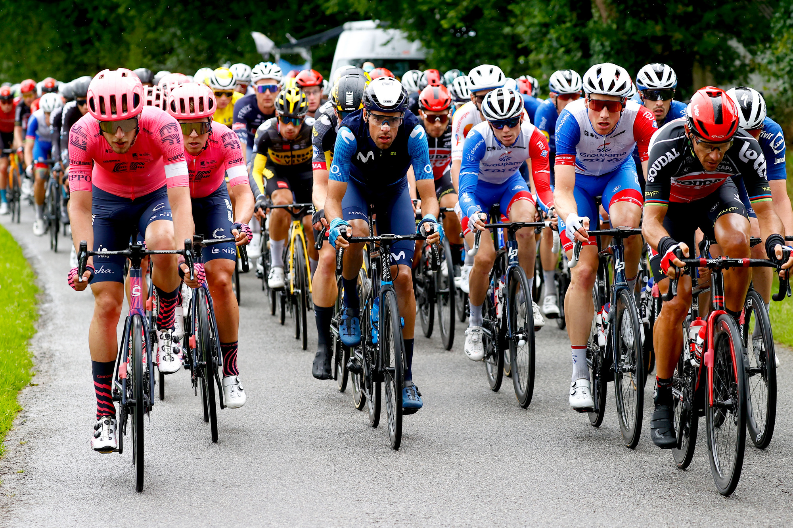

The World's Biggest Cycling Race
The Tour de France is a multi-stage bicycle race held every year, primarily in France. Riders compete over mountains, flat sprints, and time trials to win the famous yellow jersey.
Watch: Tour de France Highlights
This video gives you a sense of the speed, tactics, and drama that make the Tour de France so exciting each July.